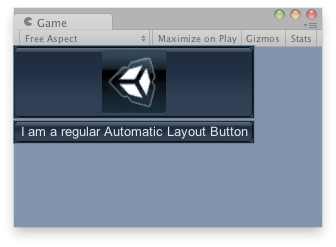

GUILayout.RepeatButton
public static bool RepeatButton(string text,
params GUILayoutOption[] options);
public static bool RepeatButton(GUIContent content,
GUIStyle style,
params GUILayoutOption[] options);
Parameters
| text | Text to display on the button. | |
| image | Texture to display on the button. | |
| content | Text, image and tooltip for this button. | |
| style | The style to use. If left out, the button style from the current GUISkin is used. | |
| options | An optional list of layout options that specify extra layouting properties. Any values passed in here will override settings defined by the style.See Also: GUILayout.Width, GUILayout.Height, GUILayout.MinWidth, GUILayout.MaxWidth, GUILayout.MinHeight, GUILayout.MaxHeight, GUILayout.ExpandWidth, GUILayout.ExpandHeight. |
Returns
bool
true when the holds down the mouse.
Description 描述
Make a repeating button. The button returns true as long as the user holds down the mouse.

Repeat Buttons in the Game View.
using UnityEngine;
public class ExampleScript : MonoBehaviour { // Draws a button with an image and a button with text Texture tex; void OnGUI() { if (!tex) { Debug.LogError("No texture found, please assign a texture on the inspector"); }
if (GUILayout.RepeatButton(tex)) { Debug.Log("Clicked the image"); } if (GUILayout.RepeatButton("I am a regular Automatic Layout Button")) { Debug.Log("Clicked Button"); } } }